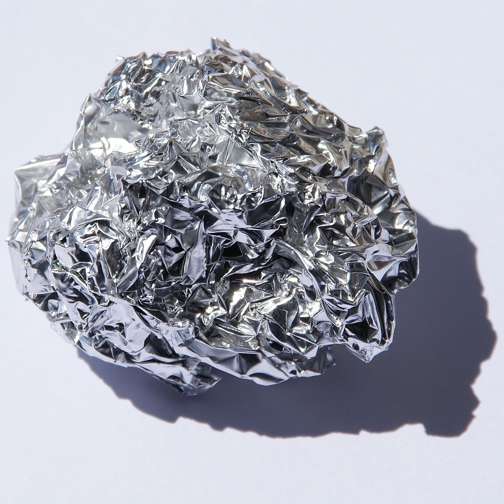

Интересные факты из истории происхождения
и названия химических элементов
Стронций
Стронций — химический элемент с атомным номером 38. Принадлежит к 2-й группе периодической таблицы химических элементов (по устаревшей короткой форме периодической системы принадлежит к главной подгруппе II группы, или к группе IIA), находится в пятом периоде таблицы. Атомная масса элемента 87,62(1) а. е. м. Обозначается символом Sr (от лат. Strontium).

Простое вещество стронций — мягкий, ковкий и пластичный щёлочноземельный металл серебристо-белого цвета. Обладает высокой химической активностью, на воздухе быстро реагирует с влагой и кислородом, покрываясь жёлтой оксидной плёнкой.
Арсен
Название мышьяка в русском языке происходит от слова «мышь», в связи с употреблением его соединений для истребления мышей и крыс. В таблицу Менделеева мышьяк (лат. Arsenicum - мужской; обозначается символом As) был включен в 1789 году, однако был известен еще с древних времен. Мышьяк - рассеянный элемент, его содержание в земной коре всего 1,7·10−4%, а в морской воде 0.003%. Известно около 200 мышьякосодержащих минералов.
Мышьяк и все его соединения ядовиты, 60 мг – смертельная доза. При остром отравлении мышьяком наблюдаются рвота, боли в животе, понос, угнетение центральной нервной системы. Сходство симптомов отравления мышьяком с симптомами холеры в Средние века позволяло маскировать использование соединений мышьяка (чаще всего, триоксида мышьяка, т. н. «белого мышьяка») в качестве смертельного яда. Во Франции его даже прозвали наследственным порошком. Существует предположение, что соединениями мышьяка был отравлен Наполеон на острове Святой Елены.

При длительном потреблении небольших доз мышьяка у организма вырабатывается иммунитет: Этот факт установлен как для людей, так и для животных. Известны случаи, когда привычные потребители мышьяка принимали сразу дозы, в несколько раз превышающие смертельную, и оставались здоровыми.
Мышьяк используется для легирования сплавов свинца, идущих на приготовление дроби, так как при отливке дроби башенным способом капли сплава мышьяка со свинцом приобретают строго сферическую форму, и кроме того, прочность и твёрдость свинца возрастают в разы.
Алюминий
По своей распространенности в земной коре среди всех элементов алюминий занимает третье место, уступая только кислороду и кремнию.
Существует красивая легенда о том, что однажды к императору Рима Тиберию, правившему в первом веке до нашей эры, пришел ювелир и вручил монарху необычайно легкую металлическую тарелку, изготовленную, предположительно, из алюминия. При этом ювелир заявил, что секрет этого металла знает только он и боги. Правда, Тиберий не пришел в восторг. Он испугался, что этот диковинный металл резко обесценит золото и серебро. Поэтому, вместо благодарности, приказал казнить человека, обладавшего таким страшным секретом. Но, современные химики к этой легенде относятся с недоверием, утверждая, что в то время не было технических возможностей получения алюминия из глинозема. А в чистом виде этот металл в природе не встречается.

Еще в середине XIX века алюминий называли «королем металлов». Это объяснялось тем, что его производство было невероятно дорогим. Поэтому, алюминий относился к разряду драгоценных металлов. Во всем мире ежегодное производство алюминия не превышало трех тонн.
Император Франции Наполеон III любил дарить знатным гостям столовые приборы из алюминия. Это был, действительно, царский подарок: алюминиевые ложки и вилки ценились гораздо выше серебряных.
@Физика
@Биология
@География
@Астрономия
@История
^